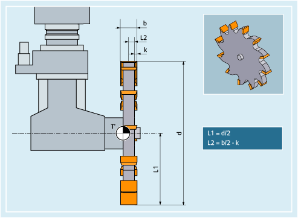

The following tool types are available in the "Special tools" group:
700 | Slotting saw |
710 | 3D probe |
711 | Edge probe |
712 | Mono probe |
713 | L probe |
714 | Star probe |
725 | Calibration tool |
730 | Stop |
731 | Spindle sleeves |
732 | End support |
The following diagram provides an overview of which tool parameters for "Slotting saw" tool type are entered in the compensation memory:
T' | Tool carrier reference point |
L1 | Geometry - length 1 |
L2 | Geometry - length 2 |
d | Diameter |
b | Slot width |
k | Projection |
Tool parameters | Meaning |
|---|---|
$TC_DP1 | Tool type |
$TC_DP3 | Geometry - length 1 |
$TC_DP4 | Geometry - length 2 |
$TC_DP6 | Diameter |
$TC_DP7 | Slot width |
$TC_DP8 | Projection |
$TC_DP21 | Base dimension length 1 |
$TC_DP22 | Base dimension length 2 |
$TC_DP23 | Base dimension length 3 |
| |
See also:
Overview